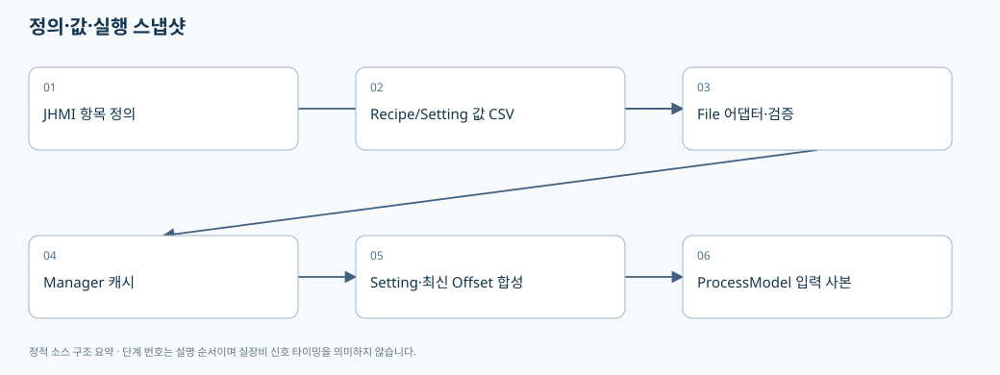

02. Recipe·Setting·JHMI·CSV를 함께 이해하기
> 기준: A3Drilling/master · 5aee8e58439c9b455cae7c9593c9be986c3e682e. 본 장은 해당 Commit의 소스를 정적으로 읽어 설명합니다. 장비 연결·가공·컴파일을 실행한 결과가 아닙니다.
JHMI 정의 파일은 화면 항목의 설계도, Recipe/Setting 값 파일은 그 항목에 들어간 값, ProcessModel은 실행에 사용할 합성 스냅샷입니다. 같은 Parameter 이름이 보여도 어느 층에 있는지 구분해야 변경이 누락되지 않습니다.

flowchart LR
A[JHMI_RCP 정의] --> C[CJhmiRecipeFile]
B[RECIPE 값 CSV] --> C
C --> D[CRecipeManager 캐시]
E[JHMI_SETTING 정의와 Setting.csv] --> F[CSettingManager 캐시]
D --> G[실행용 Parameter 사본]
F --> G
H[최신 Review Offset 파일] --> G
G --> I[좌표 계획·ProcessModel]
1. 세 가지 저장 형식을 혼동하지 않기
| 파일 계층 | 실제 읽기/쓰기 형태 | 대표 필드 | 주의점 |
|---|
| Recipe 항목 정의 | LoadFormItems → CCsvParser.Read의 헤더형 CSV | TAB,GROUP,NAME,DISPLAY NAME,CIM NAME,DATA TYPE,UNIT,SHOW,USE,VALUE,SCALE,CHANGE LIMIT,MIN,MAX,DESCRIPTION,ORDER | CIM NAME이 있다는 사실만으로 고객 Host PPID/Sub PPID 계약이 완성됐다고 말할 수 없습니다. |
| Recipe 값 | ReadRecipeValues → ParseRecipeLine이 라인별 첫 3필드를 읽음 | Tab,Name,Value, 이후 필드는 Extra | 정의 파일의 헤더 전체를 값 파일의 열 구조로 착각하지 않습니다. 3필드 미만인 행은 파서에서 null로 제외됩니다. |
| Setting 값 | 헤더가 있는 Setting.csv | TAB,NAME,VALUE | Recipe 값 파서를 그대로 적용하면 안 됩니다. |
| Active Product | 별도의 compact CSV | TYPE,NAME,VALUE | PRODUCT/RECIPE/ALIGN/REVIEW 등의 구역 이름이 TYPE에 들어갑니다. 04장에서 설명합니다. |
근거: Recipe 정의 헤더와 저장 폴더 [오프라인 파일 해설], 정의 항목 읽기 [오프라인 파일 해설], Recipe 값 파서 [오프라인 파일 해설], Setting 헤더와 값 쓰기 [오프라인 파일 해설], Product 헤더 [오프라인 파일 해설].
2. 실제 CoreData 레코드의 역할
| 타입 | 주요 필드 | 생명주기와 의미 |
|---|
ST_RECIPE_FORM_ITEM | Tab, Group, Name, DisplayName, CimName, DataType, Unit, Show, Use, DefaultValue, Scale, ChangeLimit, Min, Max, Description, DisplayOrder, Extra | 정의 CSV에서 만들어지는 항목의 메타데이터입니다. 화면 이름과 영속 Key를 분리할 수 있습니다. |
ST_RECIPE_PARAMETER | Name, Value, Unit, Range, DefaultValue, Tab, Group, Key, Description, Show, Use, DisplayOrder, DataType, ChangeLimit, Min, Max, Extra | 현재 Recipe 한 개의 편집/조회 항목입니다. Name과 Key가 같은 의미라고 강제하지 않습니다. |
ST_RECIPE_DEFINITION | Id, Name, Parameters, History | Manager가 로드·저장하는 Recipe 단위입니다. 단순 문자열 딕셔너리와 다릅니다. |
ST_RECIPE_VALUE | Tab, Name, Value, Extra | 값 CSV 한 행을 표현합니다. |
ST_RECIPE_HISTORY | ChangedAt, ItemName, OldValue, NewValue, OperatorId, RecipeName, Action, Tab, Group | 변경 전후와 맥락을 보관합니다. |
근거: Recipe CoreData 정의 [오프라인 파일 해설]. EN_RECIPE_DATA_TYPE은 String/Int/Double/Bool입니다. 문자열 Value를 사용하더라도 숫자·논리 타입 검증을 생략해도 된다는 뜻은 아닙니다. Recipe 타입 enum [오프라인 파일 해설].
Setting 쪽의 ST_SYSTEM_PARAMETER는 Section, Name, Value, Unit, Description, Group, Key, DefaultValue, DataType, Min/Max, Show/Use, DisplayOrder, Extra를 갖습니다. EN_SETTING_TAB은 Option/Interface/Io/Motor/Alarm입니다. “Setting 탭 전체가 한 종류의 단순 옵션”이 아니라 인터페이스·축·알람 정의와 연결되는 분류라는 점을 알아두면 경로를 찾기 쉽습니다. Setting CoreData와 파일 계약 [오프라인 파일 해설].
+
+## 3. Recipe 저장을 코드 순서로 따라가기
1. UI가 ST_RECIPE_DEFINITION을 만들어 CRecipeManager.SaveRecipe에 전달합니다.
2. Manager는 Recipe 작업 gate로 직렬화하고 기존 Recipe/Offset 정보를 유지하는 저장 경로를 사용합니다.
3. CJhmiRecipeFile.SaveCore는 정의 항목을 읽고 Use 조건과 활성 Cell/Shot 범위에 맞춰 저장할 항목을 고릅니다.
4. DEFAULT/RECIPE_NAME, DEFAULT/RECIPE_ID를 먼저 기록하고, 일반 항목과 Cell 범위 항목을 별도로 이어 씁니다.
5. 쓰기 후 ValidateSavedRecipeFile을 호출하고, 조건에 따라 생성/수정/저장 이력을 남깁니다.
근거: Manager 저장 진입과 변경 확인 [오프라인 파일 해설], 저장 후 재조회·캐시 [오프라인 파일 해설], SaveCore 항목 선택 [오프라인 파일 해설], Recipe 직렬화·재검증·이력 [오프라인 파일 해설].
중요한 예외가 CURRENT_PROCESS_COUNT입니다. 편집 화면을 연 뒤 실제 가공이 진행될 수 있으므로, 저장 시 기존 파일의 현재 가공매수를 보존합니다. 오래된 편집 초안이 실제 생산 카운터를 되돌리면 안 되기 때문입니다. 보정값 저장의 변경 비교에서도 이 키를 제외합니다. 런타임 소유 카운터 보존 [오프라인 파일 해설], 동시 수정 비교의 카운터 예외 [오프라인 파일 해설].
SaveParametersIfUnchanged(expected, changes)는 측정 당시 Recipe와 현재 파일을 비교한 뒤 수정합니다. 측정 후 다른 작업자가 레시피를 바꾸었다면 예상한 기준과 다르므로 예외를 내는 구조입니다. 저장이 반환된 뒤 재조회와 이력 새로고침은 CancellationToken.None을 사용합니다. 저장 전 취소와 이미 저장된 뒤 화면 갱신 실패를 같은 실패로 처리하면 사용자가 같은 보정을 두 번 적용할 위험이 있습니다. 보정 저장의 비교 및 commit 이후 처리 [오프라인 파일 해설].
4. Setting의 실제 캐시·검증·저장 순서
CSettingManager.LoadSection은 캐시가 있으면 그대로 반환합니다. ReloadSection은 파일을 다시 읽어 캐시에 넣습니다. SetValue는 Key 또는 Name으로 기존 항목을 찾고 항목이 없으면 예외를 내므로, 정의에도 없는 키를 SetValue만 호출해 추가하는 방식은 성립하지 않습니다. Setting 조회·기본값 [오프라인 파일 해설], SetValue와 저장 [오프라인 파일 해설].
SaveSection은 Option의 카메라 해상도·허용치 값을 검증하고, 특정 RunOption 변경은 MELSEC의 캐시된 Review Able 상태로 차단합니다. 파일 저장이 성공한 후에만 캐시를 교체합니다. 캐시값을 먼저 바꾸고 파일 저장 실패를 무시하는 흐름으로 고치면 메모리/디스크가 불일치합니다. 실시간 용량·해상도·RunOption 저장 검증 [오프라인 파일 해설].
파일 계층은 정의에 존재하고 Use인 항목을 정규화하고, 다른 탭의 값까지 포함한 Setting 값 전체를 다시 씁니다. 이후 저장 파일을 재로딩하여 기대 Key/Value와 비교합니다. 정규화와 저장 [오프라인 파일 해설], 저장 후 재검증 [오프라인 파일 해설].
| Setting 개념 | 현재 코드에서 확인되는 조건 | 변경 시 확인 |
|---|
| Review camera resolution | 유한한 양수 mm/pixel로 파싱 | pixel→mm 변환에 ×1000을 중복 적용하지 않는지 |
| Align camera resolution | Review와 별도로 검증 | Align/Review 해상도 키를 서로 바꾸어 쓰지 않는지 |
| Wapage AlignBase tolerance | 유한한 0 이상 값 | 물리 길이와 pixel 범위 변환의 단위 |
| Vision line capacity | 공급 함수를 통해 현재 캐시값 사용 | 한 번 시작할 때만 읽는 값으로 바꿀 때 런타임 변경 의미 |
코드의 default는 설치된 장비의 최종 교정값이 아닙니다. 실제 설정값과 출하 기준은 별도 승인 자료로 확인해야 합니다. 키와 코드 기본값 [오프라인 파일 해설], 값의 검증 범위 [오프라인 파일 해설].
5. Recipe와 Setting은 실행 시 어떻게 합쳐지는가
CStationProcess.BuildRuntimeParameters는 Recipe 입력 딕셔너리의 사본을 만든 뒤 Option과 Motor Setting을 순회하여 parameters[setting.Key] = setting.Value로 덮어씁니다. 이후 최신 Review Offset 파일을 로드하여 합칩니다. 이름이 충돌하면 이 경로에서는 Setting이 Recipe를 덮어쓰는 우선순위가 존재합니다. 모든 프로그램 경로가 같은 우선순위를 쓴다는 보장은 아니므로 Review·수동 동작은 해당 경로도 따로 봐야 합니다. 실행 Parameter 합성 [오프라인 파일 해설].
따라서 항목을 Recipe에서 Setting으로 이전하려면 UI 위치만 옮기면 부족합니다.
| 검토 단계 | 확인 내용 |
|---|
| 정의 | JHMI_RCP와 JHMI_SETTING 중 어느 쪽에 정의를 둘 것인가 |
| 이관 | 기존 Recipe 값과 새 Setting 값이 다르면 어떤 값을 한 번 가져올 것인가 |
| 기본값 | 항목 부재·구버전 키에 대한 fallback을 유지할 것인가 |
| 소유권 | 장비 공통 교정값인가, PPID/모델별 공정값인가, Product 실행 시점 값인가 |
| 소비 | Process/Review/Manual/UI 미리보기가 같은 값과 좌표 기준을 쓰는가 |
| 검증 | 재시작·Recipe 변경·제품 교체 시 값이 뜻대로 유지되는가 |
6. 고객이 원하는 분류와 현재 구현을 구분하기
현재 구현 사실: Recipe는 Geometry·공정 Parameter·Cell별 항목·런타임 카운터를 담을 수 있고, Setting은 별도 공통값을 보관하며 실행 시 합성됩니다. 회의상의 희망 구조: Recipe 메뉴를 PPID와 관련된 항목 중심으로 정리하고 장비 공통 교정값을 Setting에서 관리하자는 방향입니다. 두 내용은 같지 않습니다. 본 문서는 메뉴 재분류나 데이터 마이그레이션이 이미 완료되었다고 주장하지 않습니다.
PPID/Sub PPID·Host 구분자·Auto Job Change 계약은 이 장에서 확정하지 않습니다. 소스의 CIM NAME, Product PPID 문자열이나 PAIR_PPID 필드만으로 고객 자동화 규약의 의미/길이/요청 응답 순서까지 추론할 수 없습니다. 현재 Stage Process 요청 생성부에는 Glass/Lot 매핑 합의 후 교체하라는 TODO도 있습니다. 현재 선택 Recipe와 제품 식별자 fallback [오프라인 파일 해설], Product PPID 입력 [오프라인 파일 해설].
7. CSV 공통 구현에서 꼭 확인할 점
CCsvParser는 UTF-8 BOM을 인식하고, BOM이 없으면 먼저 엄격 UTF-8로 읽은 뒤 디코딩 실패 시 CP949로 읽습니다. 쓰기는 공통 Escape 로직과 UTF-8 BOM 설정을 사용합니다. 인코딩 호환이 있다는 사실이 모든 잘못된 CSV를 정상 복구한다는 뜻은 아닙니다. CSV 인코딩 설정 [오프라인 파일 해설], 헤더·열 확장과 Escape 쓰기 [오프라인 파일 해설], UTF-8와 CP949 읽기 [오프라인 파일 해설].
검증 시에는 한국어 항목명, 쉼표·따옴표가 들어간 값, 알 수 없는 Extra 열, 중복 Key, 필수 헤더 누락, 빈 파일, 쓰기 권한 오류, 저장 직후 취소를 각각 나눠 확인합니다. Recipe와 Setting이 모두 CSV라고 같은 테스트 데이터 형식을 쓰지 않습니다.
다음 읽기: 03. 좌표와 Script, 04. Product와 Station.